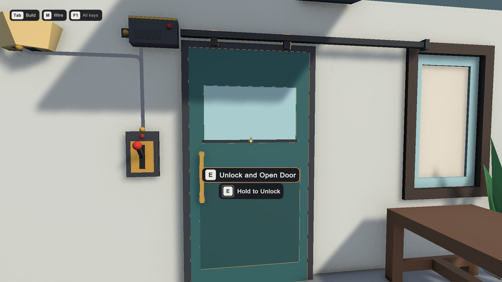

Prompts and button icons
The prompt shows what the player can do ("Open Door") with the button for the device they used last: keyboard and mouse, Xbox, PlayStation or Switch. It changes the moment they touch a different device. When something can't be used, it shows why ("Locked - find the red key") in red, without a button.


Three versions #
- Interaction Prompt (No Packages): drawn with Unity's built-in GUI. Works in every project.
- Interaction Prompt (uGUI): a Canvas with TextMesh Pro, for projects that use uGUI. Set Font to use your own.
- Interaction Prompt (Custom): your own prompt prefab, driven by the kit (see Customizing).
The look comes from a Theme (six ready-made ones, or yours) or a Prompt Style: what it shows, layout, panel, show/hide animation, hold progress and the "can't use" look. Which look wins, from first to last: the object's own (Interaction Appearance), the prompt's Style Asset, the prompt's Theme, the project-wide theme (Interaction Theme component), the prompt's Preset. All of it is in Customizing.
Both have the same settings:
- Interactor: which player to follow. Empty = the first one found (fine for single player).
- Preset: Pill (dark rounded panel, the default), Minimal (no panel, outlined text) or Bold (larger, high contrast, for TVs).
- Style Asset: your own look. Assets > Create > Interactra > Prompt Style: size, font size, icon size, padding, roundness, position on screen, fade time, colours (text, panel, accent, "can't use" colours).
- Glyphs: the button icons. New prompts use the kit's set automatically.
- Show Unavailable Reason: show why an object can't be used.
- Placement: Fixed On Screen (the default, for first person: the style's position on screen) or Above Object (next to the object, for 2D, top-down and third-person games; Object Offset sets how far above its centre). The 2D demo uses Above Object.
- Hold Format: the text for objects you hold the button on ("Hold to {0}", where {0} is the action).
Objects you hold the button on show their progress the way the style says: by default a ring around the button, a faint track that fills smoothly clockwise from the top, sharp at any screen size. It can also be a bar, the button or panel filling up, your own sprite, or nothing (your own UI can use On Hold Progress).
A Prompt Style also has a Font for the No Packages prompt. Every prompt text goes through the translation hook in Customizing.
Button icons (glyph sets) #
The kit ships Kenney's Input Prompts icons (free, CC0) for the keyboard, mouse, Xbox, PlayStation and Switch:
Runtime/Glyphs/Kenney Input Prompts.asset. Unknown controllers use the Xbox icons. A key without an icon is drawn as a
key cap with its name.
To use your own icons: Assets > Create > Interactra > Glyph Set, add a sprite per key and per gamepad button (by position: South, East, West, North...), and assign it to the prompt's Glyphs.
Crosshair #
Interaction Crosshair is a small dot: dim when nothing is targeted, bright when a usable object is, red when it is blocked. Colours and size are settings.